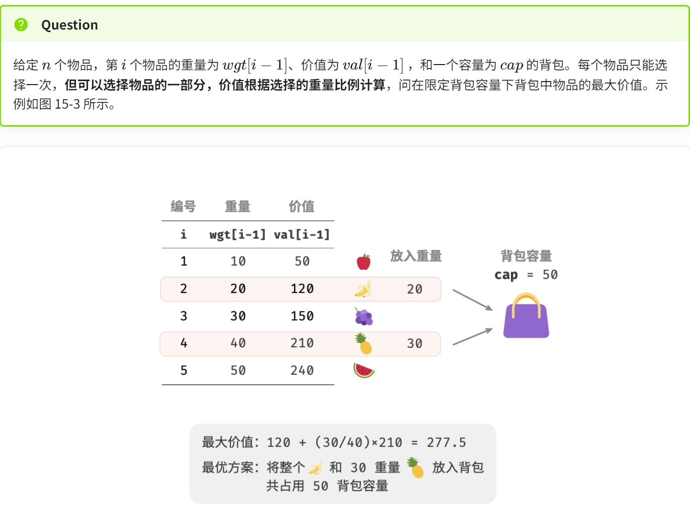
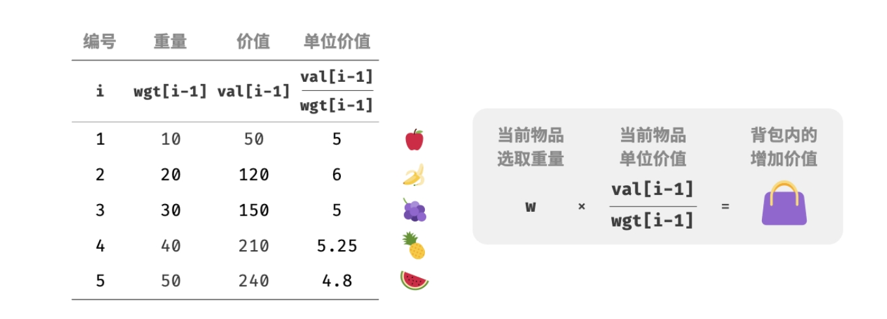
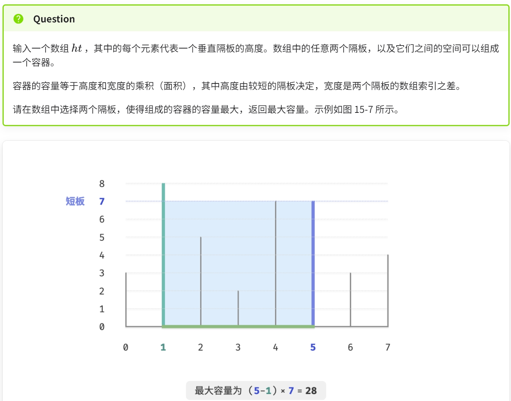
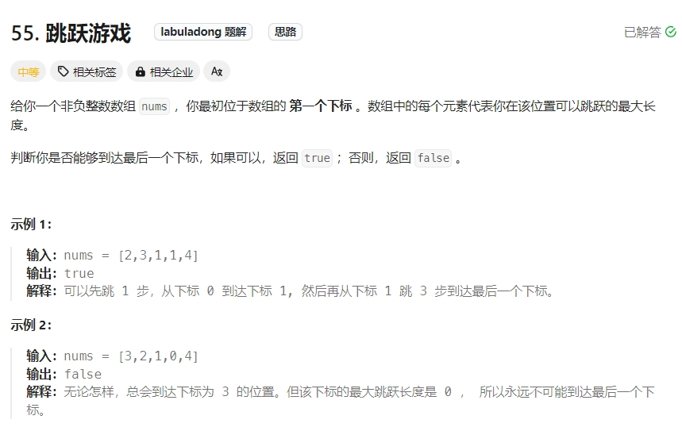
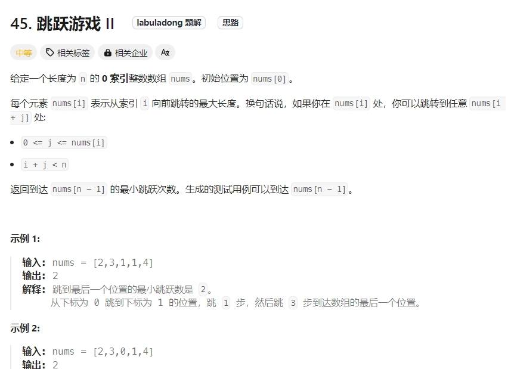

贪心算法（greedy algorithm）基本思想是在问题的每个决策阶段，都选择当前看起来最优的选择，即贪心地做出局部最优的决策，以期获得全局最优解。
贪心思路的本质，如果找不到重复计算，那就通过问题中一些隐藏较深的规律，来减少冗余计算。
从局部最优推导出全局最优，但是有时局部最优并不一定能导出全局最优（比如背包问题）
贪心算法与动态规划区别：零钱兑换（背包问题）
相同点在于都是解决优化问题的，也依赖最优子结构的性质。但是工作原理不一样~。
- 动态规划会根据之前阶段的所有决策来考虑当前决策，并使用过去子问题的解来构建当前子问题的解。
- 贪心算法不会考虑过去的决策，而是一路向前地进行贪心选择，不断缩小问题范围，直至问题被解决。

贪心算法的解法。在此代码中，假设最小面值为min，那么时间复杂度应该是O（amount/min）比起背包问题的动态规划解法时间复杂度O（n*amount）少不小。但是对于某些硬币面值组合，贪心算法并不能找到最优解（在leeetcode上测试并无法通过所有的样例）因此，贪心算法并不能用于解决背包问题，背包问题只能用动态规划去解决~。
用完全背包问题思路的动态规划解法~
一维动态规划解法
因此，对于零钱兑换问题，贪心算法无法保证找到全局最优解。它更适合用动态规划解决。
一般情况下，贪心算法的于以下两种。
- 可以保证找到最优解：贪心算法在这种情况下往往是最优选择，因为它往往比回溯、动态规划更高效。
- 可以找到近似最优解：贪心算法在这种情况下也是可用的。对于很多复杂问题来说，寻找全局最优解非常困难，能以较高效率找到次优解也是非常不错的。
- 贪心选择性质：一个问题的整体最优解可以通过一系列局部最优的选择，即贪心选择来达到。只有当局部最优选择始终可以导致全局最优解时，贪心算法才能保证得到最优解。
- 最优子结构性质：原问题的最优解包含子问题的最优解。
分数背包问题

此题跟 0-1 背包问题整体上非常相似，状态包含当前物品和容量，目标是求限定背包容量下的最大价值。
不同点在于，本题允许只选择物品的一部分。我们可以对物品任意地进行切分，并按照重量比例来计算相应价值。
如下图所示。

1.将物品按照单位价值从高到低进行排序。
2.遍历所有物品，每轮贪心地选择单位价值最高的物品。
3.若剩余背包容量不足，则使用当前物品的一部分填满背包。
Click to expand the code。时间与空间的复杂度都为O（N）
最大容量问题

Click to expand the code.时间复杂度为O(N),空间复杂度为O（1）。贪心算法比穷举更快，是因为每轮的贪心选择都会“跳过”一些状态。从而导致一些状态无法被验证。但是通过代码分析可以发现跳过的这些状态都必然不是最优解，故此跳过他们可以加速同时不影响最终结果
跳跃游戏

Click to expand the code

Click to expand the code